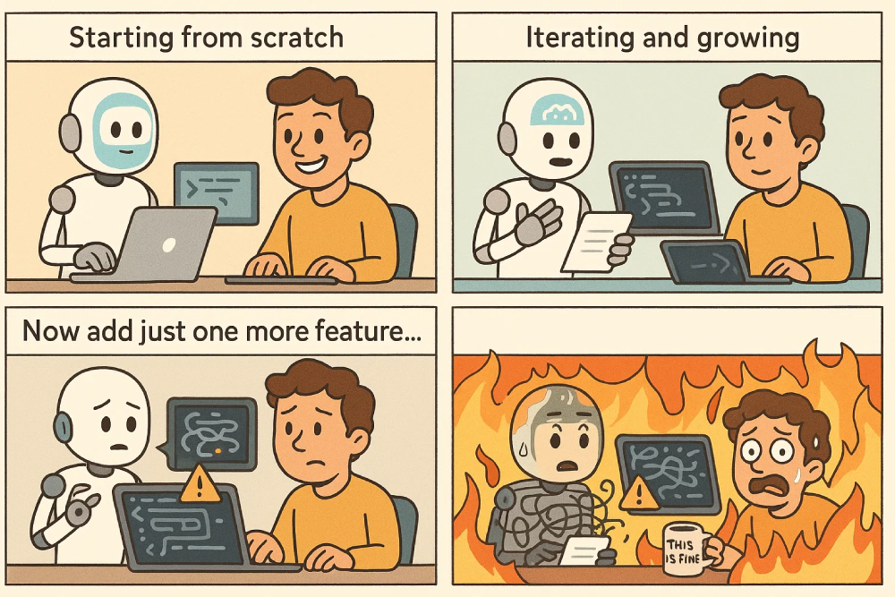

Let’s talk about simple financial analysis with LLMs. In this post, I’m not focusing on how to manage expenses. Instead, let’s see if we can gain some insights into investment analysis.
Lately, I’ve been experimenting with working alongside AI agents — and the experience has been equal parts fascinating and frustrating.
There’s a noticeable gap in how well AI performs depending on the context. When you're starting a brand-new project, things tend to go fairly smoothly. But once you're working within an existing codebase — especially when adding new features that touch old code or require refactoring — the results get messy fast.
Writing tests? That’s another story altogether.
They almost never work on the first try. At best, the AI gives you a rough draft, something halfway there. But if you want it to actually run and be useful, be ready to roll up your sleeves.
Most of the time, it feels like this:

A 4-panel comic in a clean, expressive style. The comic shows a developer building a web app with the help of an AI assistant. Include short caption text in each panel to clarify the situation.
Panel 1 (caption: “Starting from scratch”): The developer and AI begin working on a new web application. The codebase is small and clean. Everything works smoothly. The developer smiles confidently.
Panel 2 (caption: “Iterating and growing”): The app grows more complex, but everything still fits together nicely. The AI adds new features. The architecture feels solid. The developer looks even happier.
Panel 3 (caption: “Now add just one more feature…”): The developer is asked to add a new feature — but it clashes with the existing structure. The AI starts making bad decisions: adding code to the wrong place, forgetting important files. The developer looks confused.
Panel 4 (no caption): Chaos. Code is breaking everywhere. The AI is panicking, trying to patch things up. The developer is overwhelmed. Flames (literal or metaphorical) spread across the workspace. Maybe a “This is fine” mug appears.
Style: Funny, web-developer-themed, with smart visual metaphors for complexity and bugs. Use visual cues (happy faces, messy code, fire, etc.) and expressive captions to emphasize the shift from control to chaos.
You might also be interested in the following posts:
Let’s talk about simple financial analysis with LLMs. In this post, I’m not focusing on how to manage expenses. Instead, let’s see if we can gain some insights into investment analysis.

A hands-on look at building a simple React form using GPT-4.1 Agent Mode with minimal manual changes. I share how the Agent handled common development tasks, small UX improvements, and where close supervision was still needed.